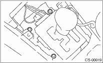

1. Mount the select lever cable onto the vehicle body.
2. Tighten the four bolts at the specified torque, then connect the connector.
Tightening torque:
13 N·m (1.3 kgf-m, 9.4 ft-lb)

3. Install the console box. 
4. Set the select lever to “N” range.
5. Lift the vehicle.
6. Set the select lever to “N” range.
7. Insert the thread portion of the other inner cable and into connector hole of the select lever, and fix the other outer cable end to bracket.
Tightening torque:
18 N·m (1.8 kgf-m, 13.0 ft-lb)
8. Adjust the select cable position.
9. After completion of fitting, make sure that the select lever operates smoothly all across the operating range.
10. Install the heat shield cover. (If equipped)
11. Install the rear exhaust pipe and muffler.
Non-turbo model
Turbo model
12. Inspect the following items. If the following inspection reveals problems, adjust the select cable and inhibitor switch.
(1) Engine starts when the select lever is in “P” and “N” range, but not in other ranges.
(2) Back-up light illuminates when the select lever is in the “R” range, but not in other ranges.
(3) Select lever and indicator positions are matched.